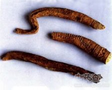

四叶参

拼音
Sì Yè Shēn
别名
奶参、羊乳、山海螺、白蟒肉、狗头参、乳头薯、乳薯
来源
为桔梗科党参属植物四叶参Codonopsis lanceolata Benth. et Hook.的根。野生品秋季白露采挖；栽培品于播种第二年秋季采挖，除去须根和根头，洗净，切段，晒干。
生境分布
生于山野沟洼潮湿地带或林缘、灌木林下。主产东北、华北、华东、中南及贵州、陕西。
药材特点
多年生缠绕草本，全株有乳汁，具特异臭气。茎无毛，有多数短分枝。主茎上的叶互生，细小，短枝上的叶4片簇生，椭圆形或菱状卵形，叶缘有刚毛，背面灰绿色；近无柄。花单生，偶成对生于侧枝端；花萼贴生至于房中部，先端5裂，花冠钟状，5浅裂，黄绿色，内有紫色斑点。蒴果下部半球状，上部有喙，有宿萼。种子有翼。花期7～8月，果期9～10月。
性状
根纺锤形或圆锥形，多纵剖成两半或块片。表面灰黄色，有较密的环状隆起的皱纹，根头小，有数个茎基或芽痕；纵剖两半的边缘向内卷曲而呈海螺状，剖面黄白色。质轻，折断面类白色。
性味
甘，平。
功能主治
补虚通乳，排脓解毒。用于病后体虚，乳汁不足，乳腺炎，肺脓疡，痈疖疮疡。
用法用量
0.5～2两。
化学成分
含合欢酸（echinocysticacid）、齐墩果酸（oleanolicacid）、环阿屯醇（cycloartenol）、α-菠甾醇（α－spinasterol）、△7-豆甾醇烯醇（△7－stigmastenol）。
药理作用
1：无药理作用数据
摘录
《全国中草药汇编》